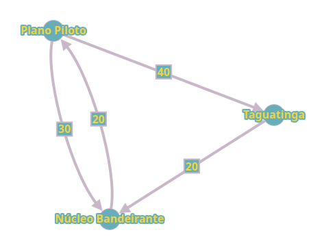

Grafos
Peso nas arestas
imagine um grafo onde um vértice é o Plano Piloto e ele está conectado a outro vértice que vamos chamar de Taguatinga, e imagine que a aresta é EPIA e possui 40 km, ou seja, estamos dadno um peso para a aresta que compõe esse grafo. Agora imagine outro vértice que é o Núcleo Bandeirante, do Plano Piloto para o Núcleo Bandeirante temos uma aresta de 30 km e de Taguuatinga para o Núcleo Bandeirante temos uma aresta de 20 km. Olhando o grafo abaixo percebemos de forma intuitiva o seguinte: Se eu quiser ir do Plano Piloto para o Núcleo Bandeirante eu não vou querer ir para Taguatinga antes, vamos ver que gastaríamos 60 km ao invés dos 30 km na conexão direta.
Grafo 9: Exemplo Grafo Brasília
Fonte - Autoral
- Como implementar peso nas arestas?
- Matriz de adjacências: Antes nos grafos, das matrizes de ajjacências, marcávamos com valor binário a conexão dos vértices, ou seja, ao invés de colocar um, dentro da matriz de adjacência já colocamos o peso na matriz.
- Lista de adjacência: Na nossa struct node {int v; link next;}; Responsável pelas arestas, agora nós adicionamos um inteiro para ser o peso das nossas arestas, ficaria algo como:
Nova struct das arestas para peso nas arestas
struct Edge {int v, int c, link next};
// int c é o peso da aresta
- Como eu saio de um vértice qualquer e chego em outro com o menor custo? Temos algoritmos para ele como:
- Bellmon Ford:
- Calcula o caminho mais curto de um único vértice
- Dijkstra:
- Calcula o caminho mais curto de um único vértice
- A*:
- Ao invés de calcular a origem para todos os destinos ele olha somente o ponto inicial e o final
- Bellmon Ford:
- "Calcule as distâncias para todos os vértices que você alcança"
Vamos implementar nessa aula o Bellmon Ford:
Bellmon Ford
bool GRAPHcptBF(Graph G, int s, int *pa, int *dist){ // int s = Vértice de origem, int *dist = fala a distância para os vértices que conseguimos alcançar
bool onqueue[1000]; // Não queremos inserir o mesmo vértice mais d euma vez na fila
for(int v = 0; v < G->v; v++)
pa[v] = -1, dist[v] = INT_MAX, onqueue[v] = false; // aqui igual o pre da dfs onde vemos se já foi visitado temos o pa, e como não sabemos a distância inicializamos com infinito. Inicializamos todos com -1 pois não visitamos nenhum.
pa[s] = s;
dist[s] = 0;
Queueint(G->E);
onqueue[s] = true;
Queueput(V); // Vértice sentinela
int k = 0;
while(1){
int v = Queueget()
if(v < V){
for(link a = G->adj[v]; a != NULL; a = a->next){
if(dist[v] + a->c < dist[a->v]){ // Ele vê o menor custo e então
dist[a->v] = dist[v] + a->c;
pa[a->v] = v;
if(onqueue[e->v]== false){
Queueput(a->v);
onqueue[e->v] = true;
}
}
}
}else{
if(Queueempty())
return true;
if(++k >= G->V)
return false;
Queueput(V)
for (int t = 0; t < G->v; t++)
onqueue[t] = false;
}
}
}
Execução manual
Resumo ChatGPT
1 - Grafos com Pesos - Em um grafo com pesos, cada aresta pode representar um custo, distância, tempo, etc. - Exemplo usado: mapa de regiões do DF com distâncias entre cidades (Plano Piloto, Taguatinga, Núcleo Bandeirante). - A escolha do caminho ideal depende do peso total acumulado.
2 - Representações com Pesos
- Matriz de Adjacência:
- Cada célula armazena o peso da aresta entre dois vértices.
- Se não há aresta, valor padrão pode ser zero ou infinito.
- Lista de Adjacência:
- Cada nó da lista contém o vértice de destino e o peso da aresta.
- A estrutura pode ser expandida com mais dados, como nome da cidade, estoque, etc.
3 - Aplicações Práticas
- Exemplo de logística: uma empresa precisa entregar uma televisão de um galpão ao cliente.
- Os vértices podem representar galpões logísticos, estoque disponível, e clientes.
- As arestas representam rotas entre os galpões com seus respectivos custos.
4 - Problema de Caminho Mínimo (Cheapest Path)
- Deseja-se encontrar o menor custo para ir de um vértice de origem até um destino.
- Três algoritmos foram destacados:
- Bellman-Ford
- Funciona com pesos negativos.
- Detecta ciclos negativos (quando é possível reduzir indefinidamente o custo).
- Serve para encontrar o menor caminho a partir de um único vértice para todos os outros.
- Dijkstra
- Funciona somente com pesos positivos ou nulos.
- Mais eficiente que Bellman-Ford em muitos casos.
- Também calcula o caminho mais curto a partir de um único vértice.
- A* (A estrela)
- Usado em jogos e inteligência artificial
- Calcula caminho entre dois vértices específicos.
- Usa uma função heurística para evitar explorar caminhos desnecessários.
5 - Ciclos Negativos
- Quando existe um caminho fechado com soma total de pesos negativa.
- Bellman-Ford é capaz de detectar esses ciclos e abortar o cálculo.
- Nenhum algoritmo comum é capaz de encontrar o menor caminho corretamente em presença de ciclos negativos.
6 - Complexidade e Desempenho
- Bellman-Ford tem complexidade maior, mas é mais robusto.
- Dijkstra é mais rápido, mas menos flexível (não funciona com pesos negativos).
- A escolha do algoritmo depende do problema e das características do grafo.
7 - Importância na Modelagem
- Grafos com pesos são essenciais para:
- Problemas de logística, rede de transportes, comunicações.
- Otimização de rotas, planejamento de entrega, e análise de conectividade.